Switch 3COM
Objectif et environnement
Objectif
Configurer un VLAN, ports trunk et tagg sur switch 3COM.
Environnement
Matériels :
2 x Switch 3COM SuperStack 3 4500 26-port
Adressage des VMS :
Réseaux VLAN 200 switch1 : 172.28.1.253/16
Réseaux VLAN 200 switch2 : 172.28.1.249/16
Documentation
Processus
Nous sommes connectés sur le port série d’un ordinateur d’un côté et sur le port Console du switch de l’autre.
Nous avons configuré PuTTY comme suite dans Connection / Serial :
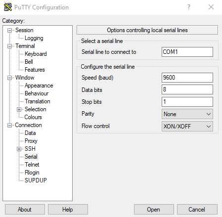
Ensuite Session > Open
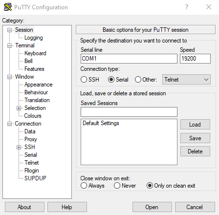
Nous avons accédé à la console du switch
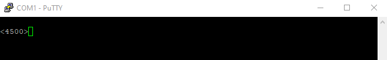
Administration VLAN en CLI
Création d’un VLAN
# Passage en mode system
system-view ou sys
# Création du VLAN 200
vlan 200
# Définition l’adresse IP/Sous-masque pour le VLAN 200
# Choix VLAN
interface vlan 200 ou int vlan 200
# Renseigner l’adresse IP ainsi que le sous-masque
ip address 172.28.1.253 255.255.0.0
# Ajout d’un port dans le VLAN, ici du 7 à 10
port Eth1/0/7
port Eth1/0/8
port Eth1/0/9
port Eth1/0/10
Afficher la configuration de VLAN’s
display vlan all
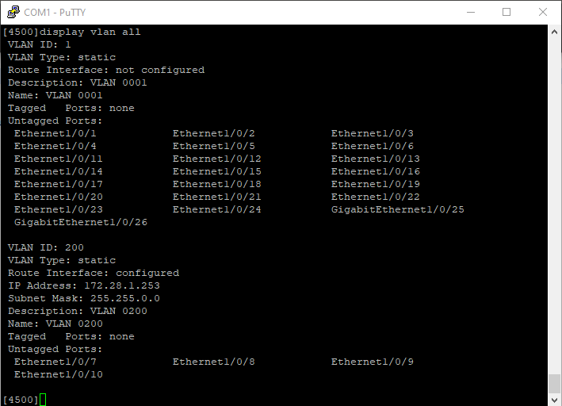
Une autre méthode pour afficher la configuration de ports en utilisant la commande display brief interface
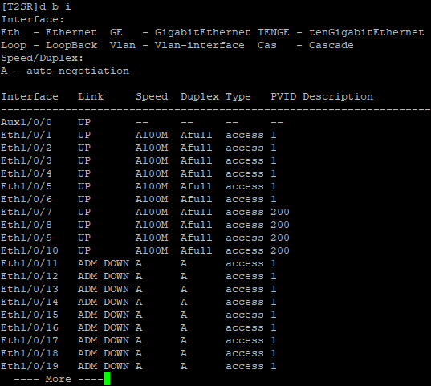
Supprimer un VLAN
# Mode system
system-view ou sys
# Supprimer le VLAN 200
undo VLAN 200
Administration VLAN par interface Web
J’accède à l’interface web sur l’adresse 172.28.1.253/16
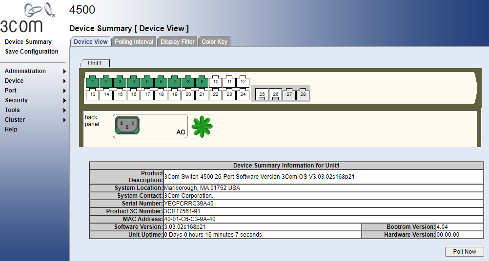
Menu > Device > VLAN > Setup
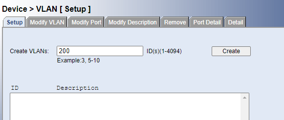
Création d’un VLAN
Modify VLAN
VLAN 200 avec ses ports actifs
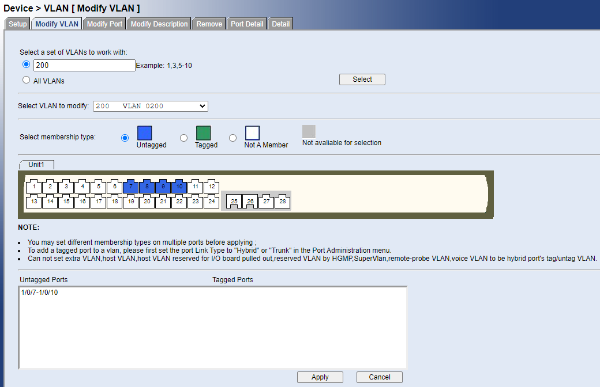
Configurer d’une adresse IP en GUI
Administration > IP setup
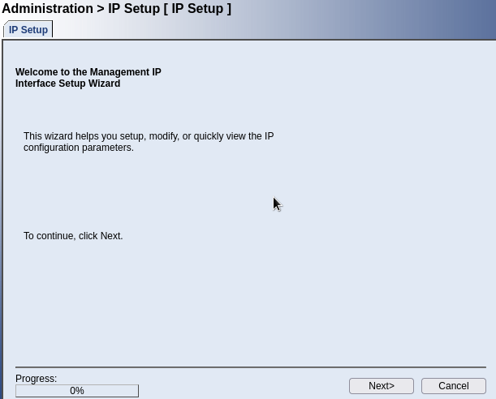
VLAN1
Nous avons laissé en mode DHCP
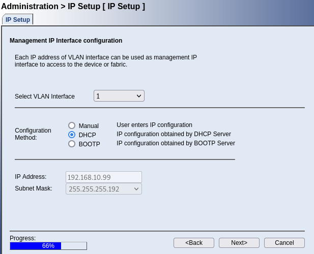
VLAN 200
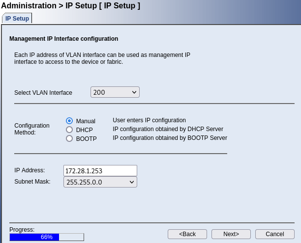
Créer un Trunk sur un port
Cela permet de faire communiquer deux switches et faire passer plusieurs VLAN
Switch 1
# Choix de l’interface
Interface GigabitEthernet1/0/28
# Changer le type de link
port link-type trunk
# Ajouter dans les VLAN souhaités
port trunk permit vlan 1 200
Configuration des ports actuel
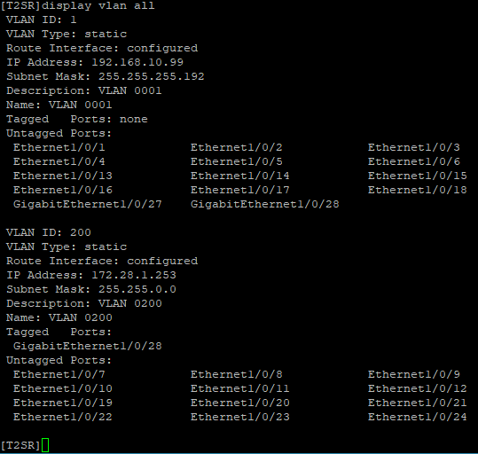
Tagger un port
Pour interconnecter les deux switches, nous avons tagué les ports 28 sur chacun
interface GigabitEthernet1/0/28
port link-type hybrid
port hybrid vlan 1 200 tagged
Cisco Packet Tracer
Schéma du réseau
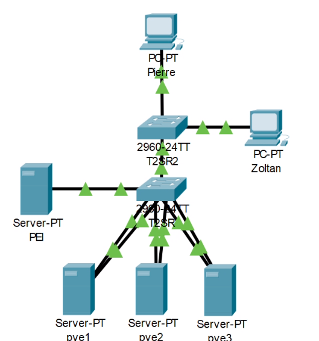
Configuration du Switch1 (T2SR)
Nous avons exécuté les commandes suivantes pour créer le VLAN 200
# Entrer dans mode Privileged EXEC
enable
# Entrer dans le mode configuration
config
# Choix terminal
terminal
# Configuration du VLAN
vlan 200
# Ajouter le port 0/7 dans le VLAN 200
interface FastEthernet0/7
# Mettre en mode accesible
switchport mode access
# Donner accès au port pour le VLAN 200
switchport access vlan 200
# Quitter la configuration
end
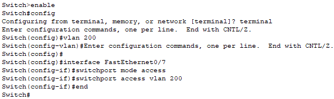
Nous avons effectué les mêmes commandes pour les ports 8 à 10, puis nous avons vérifié la configuration des ports avec la commande
sh run
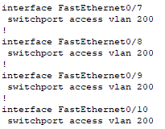
Nous avons créé un trunk entre vlan 1 et 200 sur le port GigabitEthernet2
enable
config (choisir terminal)
interface GigabitEthernet0/2
switchport access vlan 200
switchport mode trunk
sh run
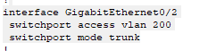
Nous pouvons obtenir les mêmes résultats en mode GUI
Menu Config
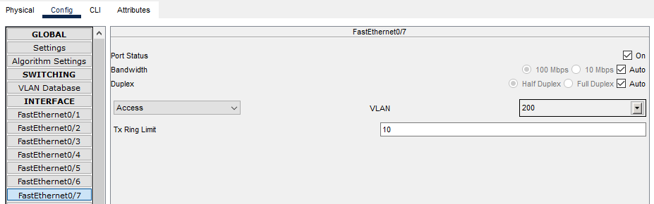
Configuration du Switch2 (T2SR2)
Nous avons exécuté les commandes suivantes pour créer le VLAN 200
# Entrer dans mode Privileged EXEC
enable
# Entrer dans le mode configuration
config
# Choix terminal
terminal
# Configuration du VLAN
vlan 200
Nous avons créé un trunk pour faire passer le VLAN 200 sur le port FastEthernet1 et 2
enable
config (choisir terminal)
interface FastEthernet0/1
switchport access vlan 200
switchport mode trunk
interface FastEthernet0/2
switchport access vlan 200
switchport mode trunk
sh run
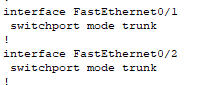
Nous avons créé un trunk entre vlan 1 et 200 sur le port GigabitEthernet2
enable
config (choisir terminal)
interface GigabitEthernet0/2
switchport access vlan 200
switchport mode trunk
sh run
Conclusion
La configuration des switches est correctement déroulée. Nombreuses tâches sont plus aisées à faire en GUI, d’autres en CLI. La configuration en CLI est privilégiée.